AI Games
Games I had AI build. Each one is a single page, so just click and play. On a Meta Quest, most have a PLAY IN VR button.
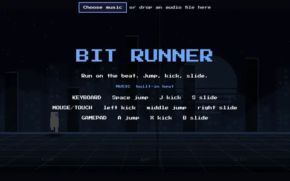
Bit Runner
A synthwave rhythm runner where the obstacles land on the beat. Play the built-in track or drop in your own song and it finds the tempo.
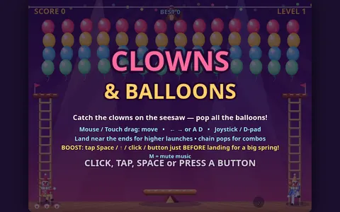
Clowns & Balloons
A circus classic: bounce clowns off a seesaw to pop rows of balloons under the big top, to a brass-band march.
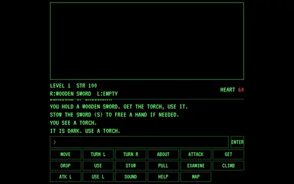
Dungeons of Daggorath
A tribute to the CoCo dungeon crawler. Type commands, explore the maze by torchlight, and listen to your heartbeat as monsters close in.
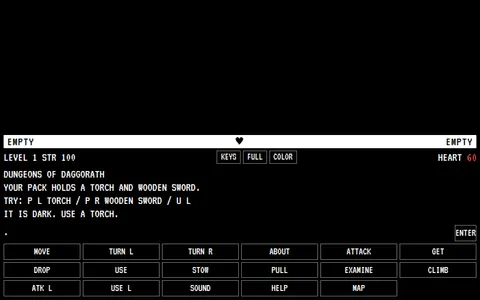
Dungeons of Daggorath v2
The Daggorath remake with a full-color mode, fullscreen, and on-screen keys for touch play.
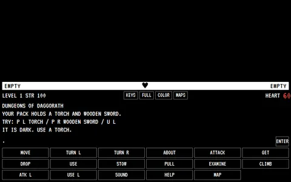
Dungeons of Daggorath v3
The latest Daggorath build, with a map editor: draw your own levels or generate random ones, then play them.
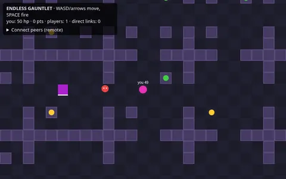
Endless Gauntlet P2P
A co-op dungeon shooter with no end. Peers link up with no server, over WebRTC or just by opening more tabs.
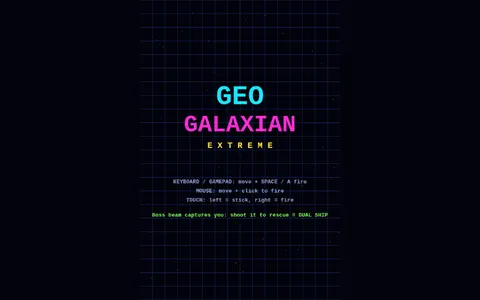
Geo Galaxian Extreme
Galaxian-style waves of diving aliens over a glowing, rippling neon grid, with a boss to finish off.
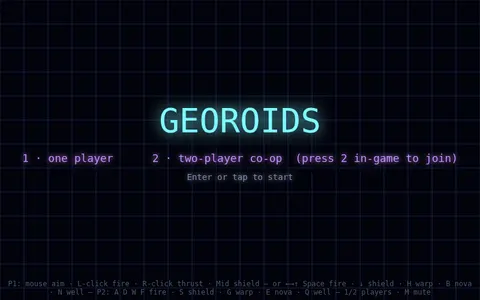
Georoids
Asteroids reimagined with shields, warp, nova bombs and gravity wells. One or two players.
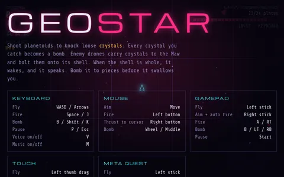
Geostar
A Sinistar-style shooter on a warping neon grid: stop the Maw before it finishes building itself and starts hunting you. Works with gamepad, touch, and VR.
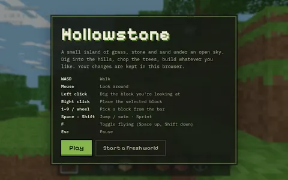
Hollowstone
A block-building sandbox on a small island. Dig, chop trees and build, and your world is saved in your browser.
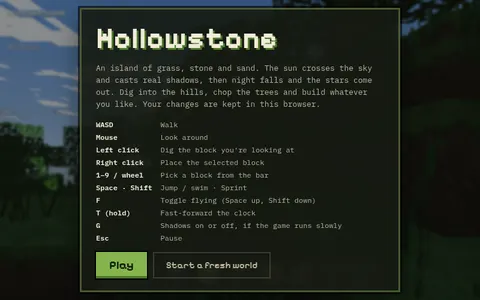
Hollowstone v2
Hollowstone with sharper textures, a day-night cycle with real shadows and stars, swimming and flying.
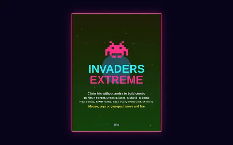
Invaders Extreme
Space Invaders turned up, with bosses, UFOs and a two-player mode.
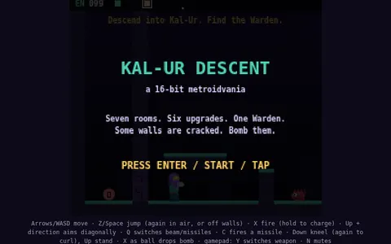
Kal-Ur Descent
A Metroid-style platformer down into alien caverns, with a charge beam, missiles, wall jumps, a morph ball and bombs.
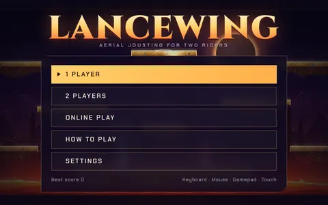
Lancewing
Aerial jousting for one or two riders.
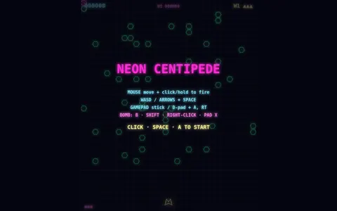
Neon Centipede
Centipede in neon, where every hit sends shockwaves through the background grid.
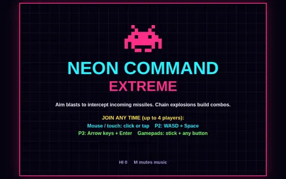
Neon Command Extreme
Missile Command in neon: shoot down incoming warheads wave after wave to protect your cities.
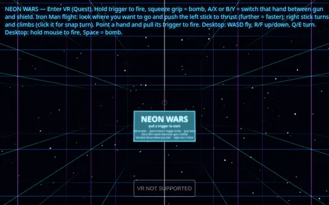
Neon Wars VR
A full 3D VR shooter for Meta Quest: fly Iron Man style through a neon arena, a gun or shield in each hand, and bomb the swarms. Also playable on desktop.
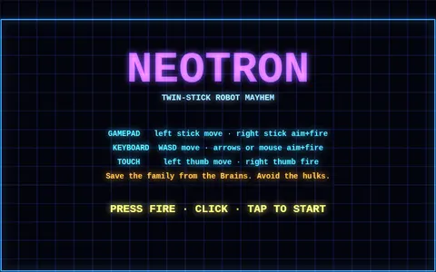
NEOTRON
A twin-stick neon arena shooter in the Robotron mold: blast the waves and rescue the survivors.
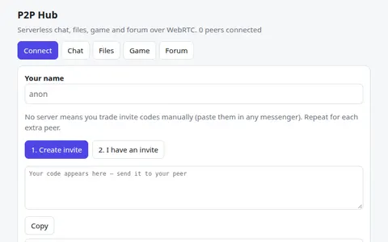
P2P Hub
Serverless chat, file sharing, a forum and checkers between browsers over WebRTC, connected with copy-paste invite codes.
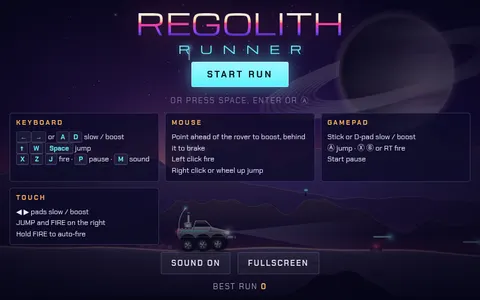
Regolith Runner
A Moon Patrol-style run: drive a six-wheel rover across five lunar seas, jump craters, blast boulders and shoot raiders from A to Z.
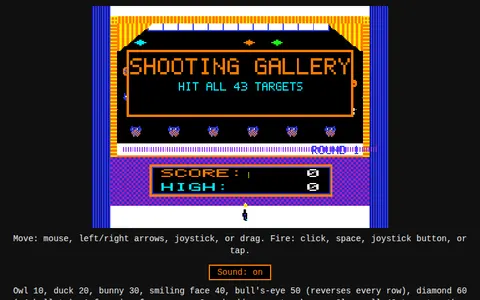
Shooting Gallery (CoCo layout)
A carnival shooting gallery laid out like the CoCo original: owls, ducks, bunnies and the bear bonus round.
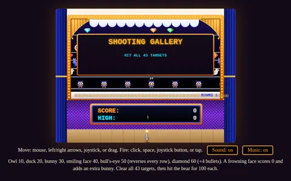
Shooting Gallery
The shooting gallery with a refreshed look and an "Over the Waves" carnival soundtrack.
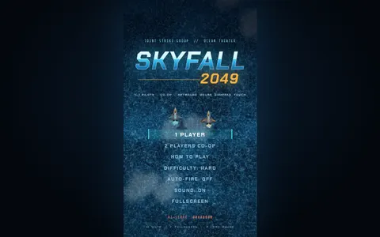
Skyfall 2049
A vertical-scrolling co-op shooter in the style of 1942/1943, set over a modern-day and near-future ocean war.